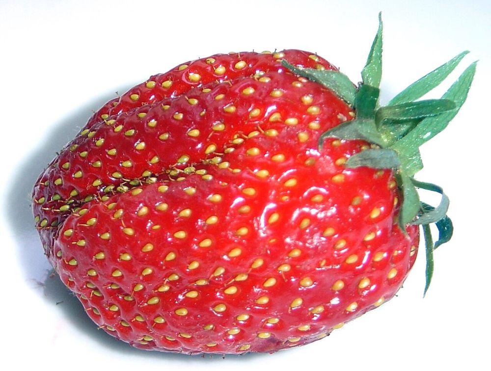
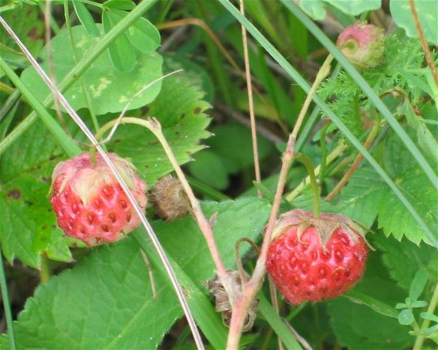

1Mutfak dili ile bilim dili farklı
Günlük hayatta meyve ve sebzeleri tadına ve nasıl kullanıldıklarına göre ayırırız. Tatlı olana meyve, yemekte kullanılana sebze deriz. Botanikçiler ise bitkileri çiçeklerinin ve meyvelerinin nasıl geliştiğine göre sınıflandırır.
İngilizcede 'berry' denilen meyve grubu, Türkçede 'üzümsü meyve' olarak bilinir. Günlük dilde bu kelime çilek, ahududu, böğürtlen gibi küçük meyveler için kullanılır. Ama botanik tanımı bambaşkadır.

2Bilimsel tanım
Botanikte üzümsü meyve, tek bir çiçeğin tek bir yumurtalığından gelişen, dış kabuğu ince, iç kısmı etli olan ve tohumları bu etli kısmın içinde bulunan meyvedir.
Bu tanıma göre üzüm, domates, kivi, patlıcan, biber ve muz birer üzümsü meyvedir. Evet, muz da. Bugün yediğimiz kültür muzlarının tohumları neredeyse yok olmuştur. Muzun ortasındaki küçük kahverengi noktalar bu tohumların kalıntılarıdır.
3Çilek neden değil?
Çilek bu tanıma uymaz. Çileğin üzerindeki küçük sarı 'tohum' sandığımız noktaların her biri aslında ayrı birer küçük meyvedir. Botanikte bunlara 'aken' denir ve her birinin içinde bir tohum bulunur.
Yediğimiz kırmızı, etli kısım ise çiçeğin yumurtalığından değil, çiçek tablası denen ve çiçeği taşıyan kısımdan gelişir. Bu yüzden botanikçiler çileğe 'yalancı meyve' der. Ahududu ve böğürtlen de berry değildir. Onlar birçok küçük meyvenin bir araya geldiği 'toplu meyve'lerdir.

4Domates meyve mi, sebze mi?
Botanik açısından domates bir meyvedir, üstelik üzümsü meyvedir. Ama mutfakta sebze gibi kullanılır. 1893'te ABD Yüksek Mahkemesi, vergi uygulaması açısından domatesin sebze sayılması gerektiğine karar vermişti. Yani domatesin hem bilimsel hem de hukuki bir kimliği var.
💡 Biliyor muydun?
- Karpuz ve kavun da botanik açıdan üzümsü meyvelerin özel bir türü sayılır.
- Avokado da bir berry'dir. İçinde tek ve büyük bir tohum bulunur.
- Bir çileğin üzerinde ortalama 200 civarında aken bulunur.
✅ Kaynaklar
📷 Görseller
- Kapak: Ivar Leidus · CC BY-SA 4.0 · Wikimedia Commons
- Bir çilek: Copyright © 2005 David Monniaux · CC BY-SA 3.0 · Wikimedia Commons
- Yabani çilekler: Harald Süpfle · CC BY-SA 2.5 · Wikimedia Commons